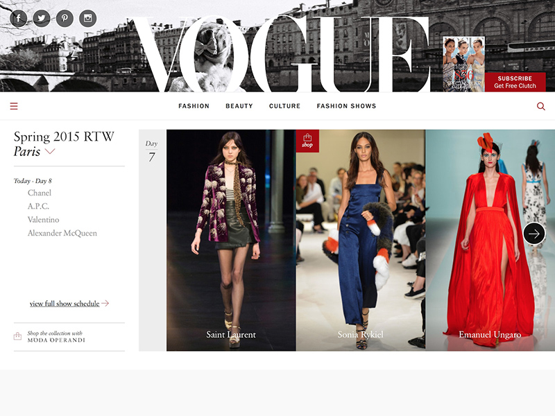
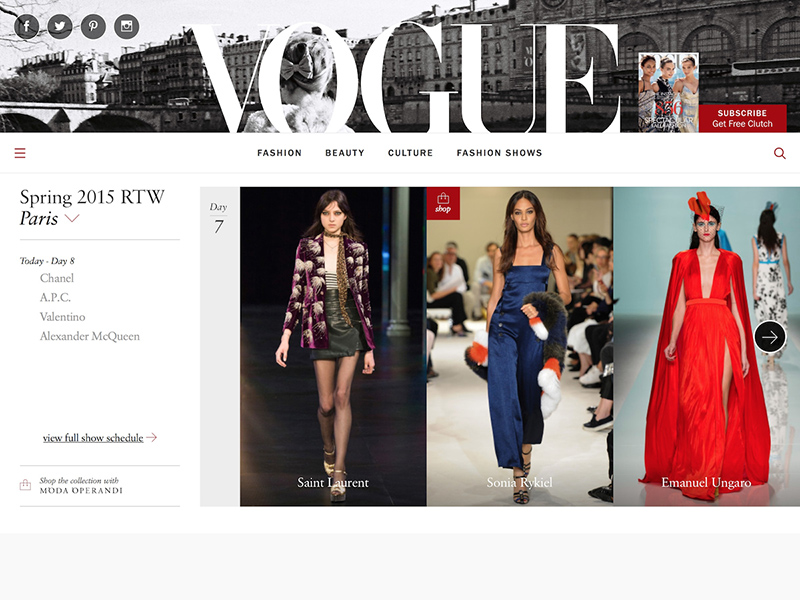

Bootstrap makes front-end web development faster and easier.
It's made for folks of all skill levels, devices of all shapes, and projects of all sizes.

Preprocessors
Bootstrap ships with vanilla CSS, but its source code utilizes the two most popular CSS preprocessors,
Less and Sass. Quickly get started with precompiled CSS or build on the source.

One framework, every device.
Bootstrap easily and efficiently scales your websites and applications with a single code base,
from phones to tablets to desktops with CSS media queries.

Full of features
With Bootstrap, you get extensive and beautiful documentation for common HTML elements,
dozens of custom HTML and CSS components, and awesome jQuery plugins.
 All the tools your team needs in one place.
All the tools your team needs in one place.
 
